The bulk downloader restyled against fontshare.com itself: hairline parchment UI, quiet control rows, and full-width specimen cards with the family name set huge in its own typeface. Plus the fix for the bug where every preview rendered in the same body font.
The black “command deck” hero is gone. The intro is a quiet statement band in the Fontshare manner: big display headline, one sentence, one action, then quick-select chips on a hairline. The download stays the most prominent element on the page.
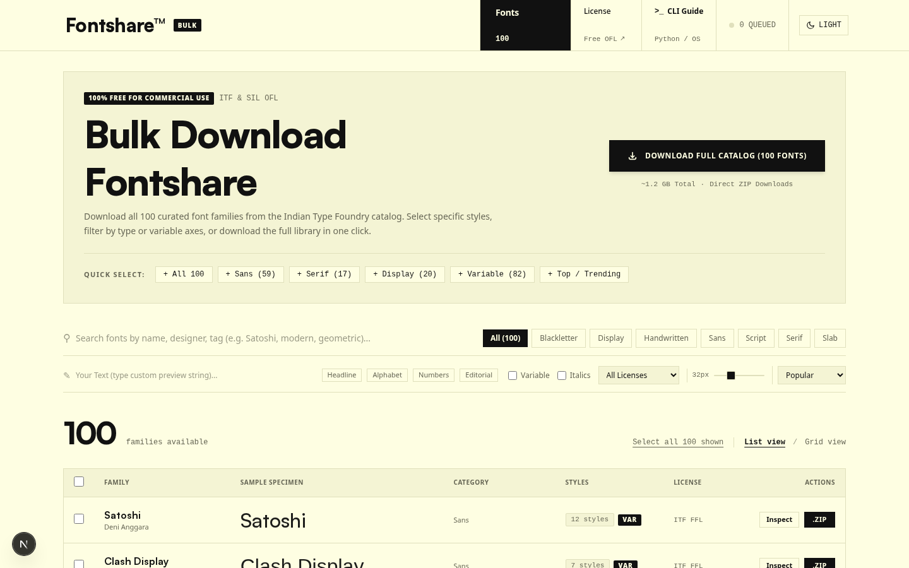
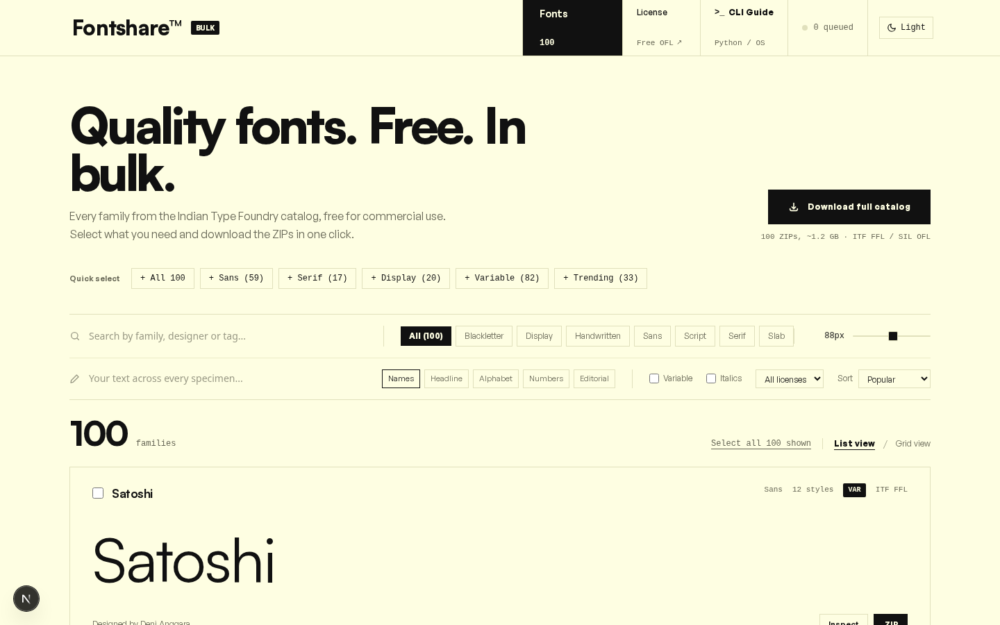
Before, every specimen rendered in the same body font: the lazy loader observed a
display:none sentinel, which an IntersectionObserver never reports as
intersecting, so the per-family stylesheet never loaded. After the fix each card
loads its family (101 CSS requests) and sets its name in its own typeface.
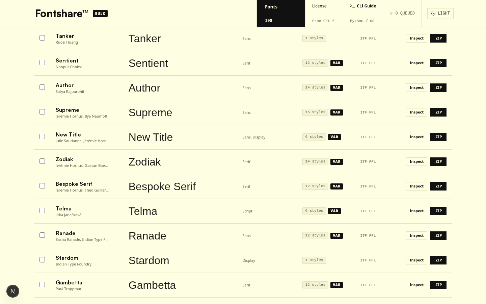
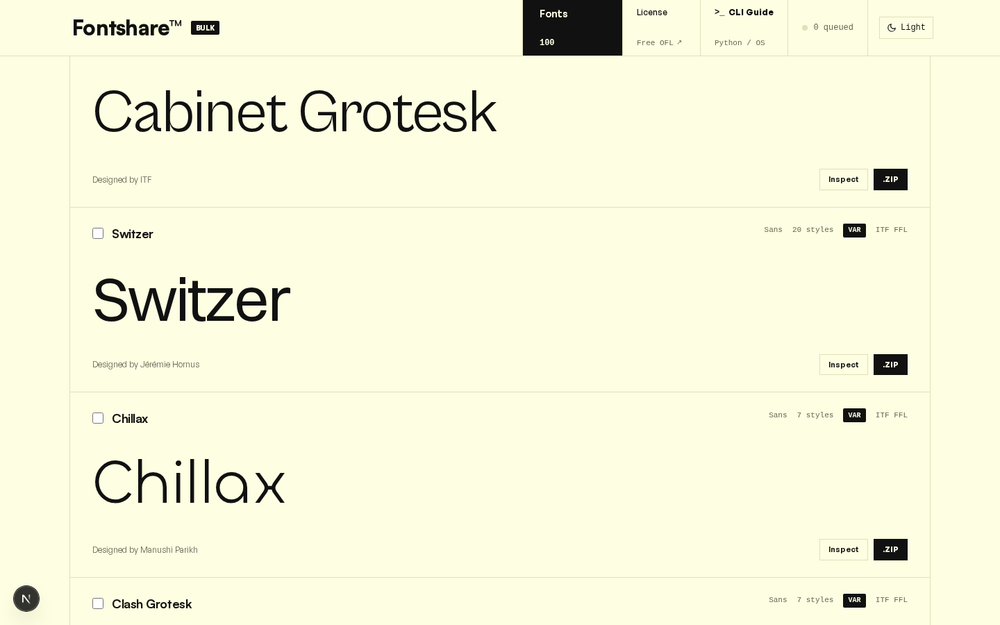
Same catalog, same wiring; cards now carry the giant specimen, quieter meta rows, a 2px hover lift and keyboard focus rings.
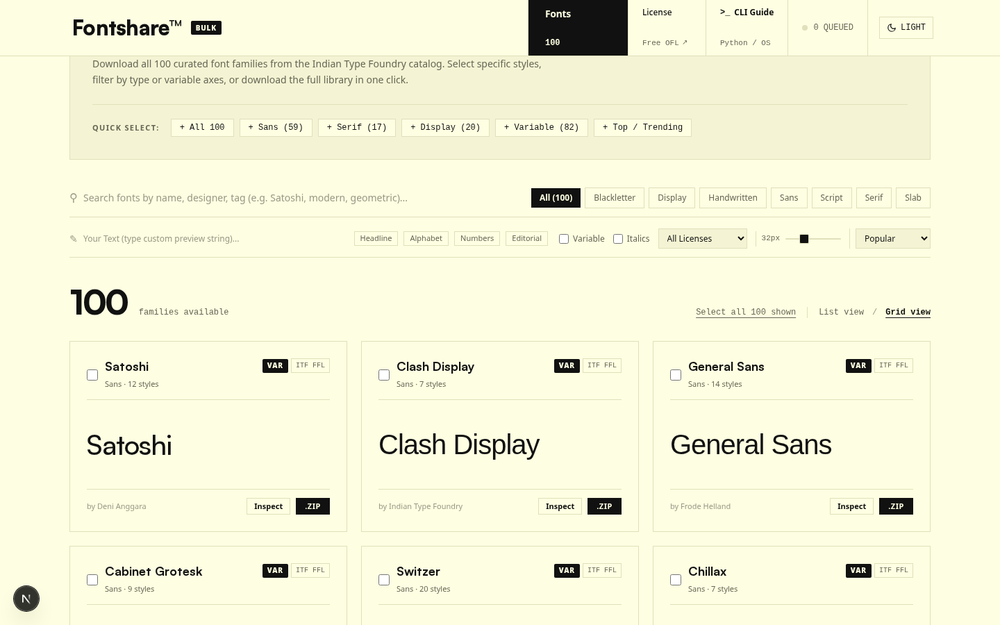
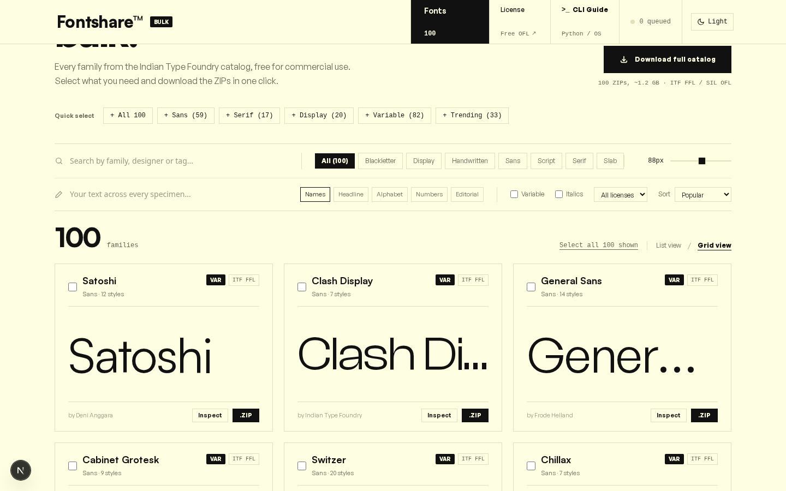
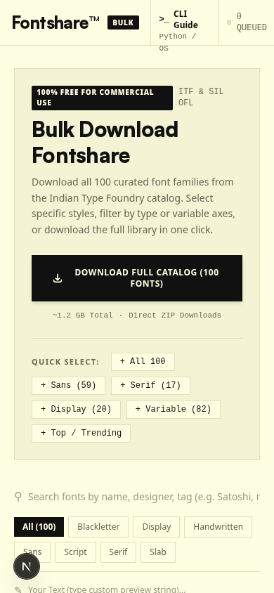
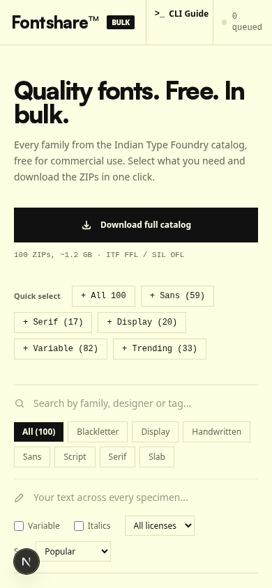
Dark mode tokens unchanged, verified. The inspect drawer still works and now loads its
family reliably. Footer links had raw ↗ entities rendering as
literal text; replaced with real arrow glyphs everywhere.
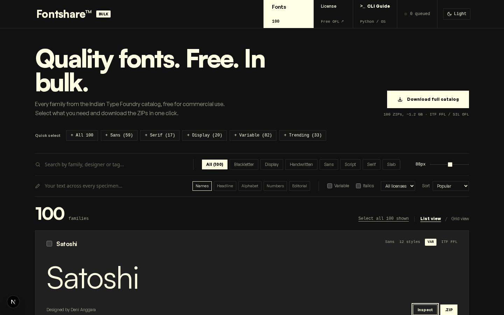
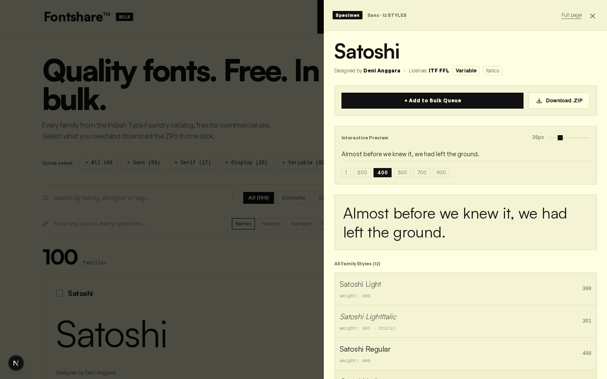
The old CLI guide documented flags that do not exist (--category,
--variable-only, --top-only, --slug), a
downloads/zips/ folder the script never creates, and a
“zero dependencies” claim while it imports aiohttp. The guide is now
accurate: a web-UI walkthrough first (including the new stdlib-only{" "}
cli/import_zips.py that turns browser-downloaded ZIPs into the same
font library, with --install), then the real CLI commands
(pip install -r cli/requirements.txt, python cli/download.py,
the real flags table), the installer tab, and the shell-script export tab.
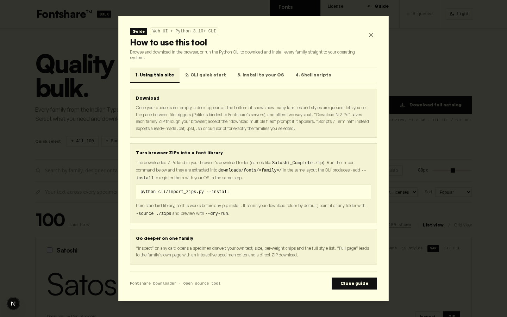
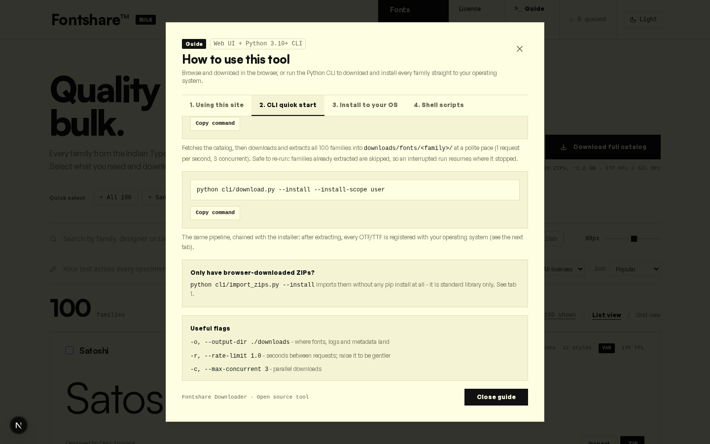